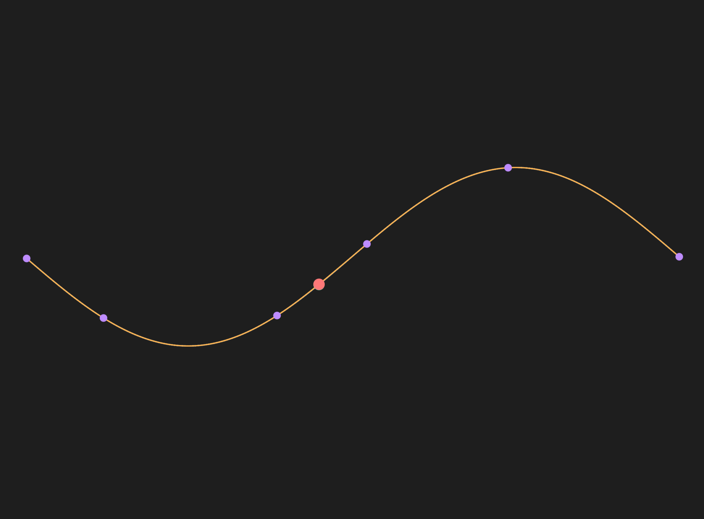
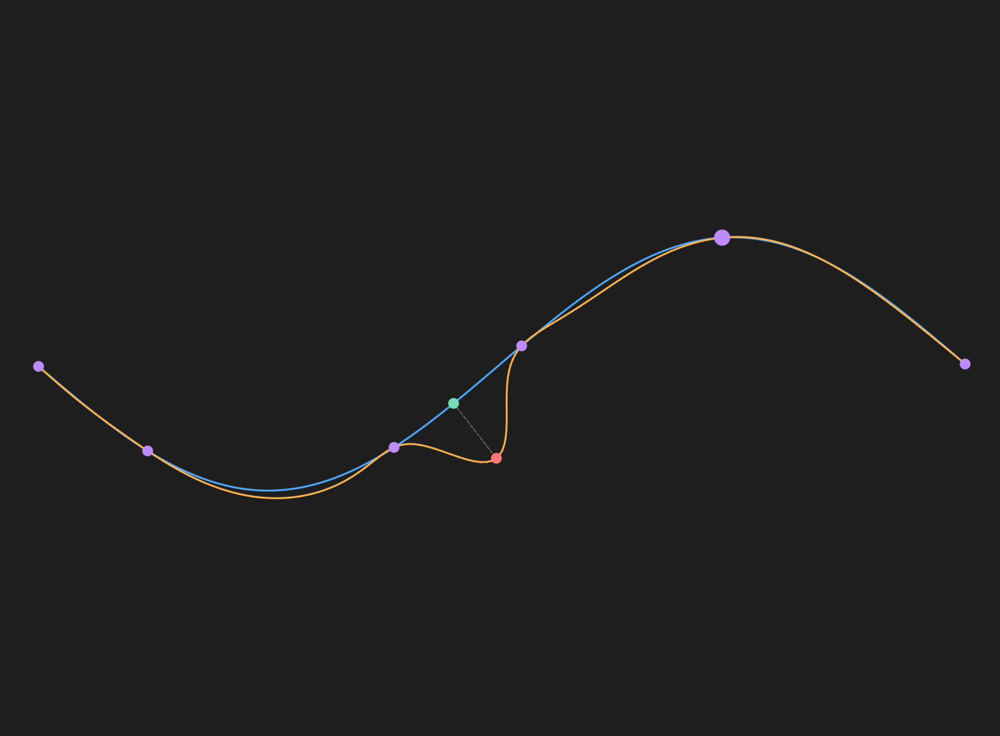
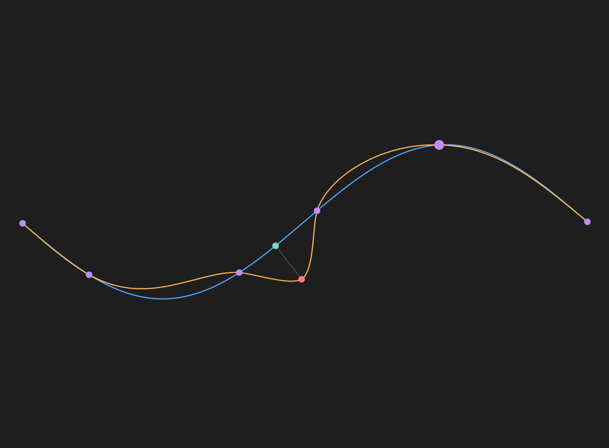

1. 开篇
1.1 一个直观的场景
想象你在用矢量绘图软件（如 Illustrator、Inkscape）编辑一条曲线。你希望让曲线在一个点附近自然隆起，而远处的部分纹丝不动。
Moving Least Squares (MLS) 是一个合适的曲线编辑方法。那么，这种方法如何实现「局部性」？
2. 问题定义：我们想要什么样的曲线编辑？
2.1 输入与输出
| 输入 | 符号 | 说明 |
|---|---|---|
| 原始曲线上的离散点集 | \( \mathbf{v} \) | 由折线近似表示的曲线采样点 |
| 用户拖拽的源控制点 | \( \mathbf{p}_i \) | 用户拾取的曲线上一点（原始位置） |
| 拖拽目标位置 | \( \mathbf{q}_i \) | 用户将 \( \mathbf{p}_i \) 拖拽到的新位置 |
| 位移向量 | \( \Delta = \mathbf{q}_i - \mathbf{p}_i \) | 用户的编辑输入 |
| 输出 | 符号 | 说明 |
|---|---|---|
| 变形后的曲线点集 | \( f(\mathbf{v}) \) | 每个原始点 \( \mathbf{v} \) 的新位置 |
一般情形：用户可给出多个控制点对 \( \{(\mathbf{p}_i, \mathbf{q}_i)\}_{i=1}^n \)，MLS 统一处理。
2.2 核心约束
| 约束 | 数学表达 | 含义 |
|---|---|---|
| 插值约束 | \( f(\mathbf{p}_q) = \mathbf{q} \) | 被拖拽的点精确到达目标位置 |
| 局部性 | \( \|f(\mathbf{v}) - \mathbf{v}\| \to 0 \) 当 \( \|\mathbf{v} - \mathbf{p}_q\| \to \infty \) | 距离拖拽点越远，位移越小 |
| 平滑性 | 尽可能光滑 | 相邻点位移过渡自然，不出现折痕 |
2.3 为什么不用其他方法？
| 方法 | 问题 |
|---|---|
| 径向基函数 (RBF) | 全局支撑，远处也会被拖歪 |
| MLS | 封闭解、单点计算独立、局部可控、支持多约束 |
3. 核心直觉：把局部编辑当成「加权变换」
3.1 一句话核心
对于曲线上的每个点 \( \mathbf{v} \)，MLS 会问：「如果控制点从 \( \mathbf{p}_i \) 移动到 \( \mathbf{q}_i \)，我应该跟着动多少？」 答案取决于 我到每个控制点的距离。
3.2 加权思想
MLS 的核心洞察是：距离越近的控制点，对当前点的「影响力」越大。
- 离 \( \mathbf{v} \) 很近的控制点：它的位移会强烈影响 \( \mathbf{v} \)
- 离 \( \mathbf{v} \) 很远的控制点：几乎不影响 \( \mathbf{v} \)
这种「影响力」通过 权重函数 \( w_i(\mathbf{v}) \) 量化。
3.3 直观类比
捏橡皮泥：捏住一个点往外拉——
- 最近的点跟着走得很彻底
- 稍远的点被轻微扯动
- 远处的点完全不受影响
MLS 就是把这个直觉公式化了。
4. 数学骨架：精简化公式
4.1 权重函数
衡量点 \( \mathbf{v} \) 受控制点 \( \mathbf{p}_i \) 的影响程度：
\[ w_i(\mathbf{v}) = \frac{1}{\|\mathbf{p}_i - \mathbf{v}\|^{2\alpha}}, \quad \alpha > 0 \]- \( \alpha \) 控制衰减速度（通常 \( \alpha = 1 \) 或 \( 2 \)）
4.2 加权中心
为使变换与绝对位置解耦，先计算加权质心：
\[ \mathbf{p}_* = \frac{\sum_i w_i \mathbf{p}_i}{\sum_i w_i}, \quad \mathbf{q}_* = \frac{\sum_i w_i \mathbf{q}_i}{\sum_i w_i} \]相对偏移量：
\[ \hat{\mathbf{p}}_i = \mathbf{p}_i - \mathbf{p}_*, \quad \hat{\mathbf{q}}_i = \mathbf{q}_i - \mathbf{q}_* \]4.3 变形函数基本形式
MLS 假设变形是平移 + 线性变换：
\[ f(\mathbf{v}) = (\mathbf{v} - \mathbf{p}_*) \mathbf{M} + \mathbf{q}_* \]其中 \( \mathbf{M} \) 是一个 \( 2\times 2 \) 矩阵，通过加权最小二乘确定：
\[ \min_{\mathbf{M}} \sum_i w_i \|\hat{\mathbf{p}}_i \mathbf{M} - \hat{\mathbf{q}}_i\|^2 \]4.4 仿射变换 (Affine) — 最灵活
不对 \( \mathbf{M} \) 加额外约束，允许缩放、旋转、剪切。
定义加权协方差矩阵：
\[ \mathbf{S}_{pp} = \sum_i w_i \hat{\mathbf{p}}_i^\top \hat{\mathbf{p}}_i, \quad \mathbf{S}_{pq} = \sum_i w_i \hat{\mathbf{p}}_i^\top \hat{\mathbf{q}}_i \]最优解满足正规方程：
\[ \mathbf{S}_{pp} \mathbf{M}_{\text{affine}}^\top = \mathbf{S}_{pq} \]即：
\[ \mathbf{M}_{\text{affine}}^\top = \mathbf{S}_{pp}^{-1} \mathbf{S}_{pq} \]4.5 相似变换 (Similarity) — 保形状
限制 \( \mathbf{M} \) 为旋转 + 均匀缩放形式（二维）：
\[ \mathbf{M}_{\text{sim}} = \begin{bmatrix} a & -b \\ b & a \end{bmatrix} \]定义：
\[ \mu_s = \sum_i w_i \|\hat{\mathbf{p}}_i\|^2 \] \[ a = \sum_i w_i \left(\hat{p}_{i,x}\hat{q}_{i,x} + \hat{p}_{i,y}\hat{q}_{i,y}\right) \] \[ b = \sum_i w_i \left(\hat{p}_{i,x}\hat{q}_{i,y} - \hat{p}_{i,y}\hat{q}_{i,x}\right) \]则：
\[ \mathbf{M}_{\text{sim}} = \frac{1}{\mu_s} \begin{bmatrix} a & -b \\ b & a \end{bmatrix} \]当 \( \mu_s = 0 \) 时退化为纯平移。
4.6 最终变形
\[ f_{\text{affine}}(\mathbf{v}) = (\mathbf{v} - \mathbf{p}_*) \mathbf{M}_{\text{affine}} + \mathbf{q}_* \] \[ f_{\text{similarity}}(\mathbf{v}) = (\mathbf{v} - \mathbf{p}_*) \mathbf{M}_{\text{sim}} + \mathbf{q}_* \]5. 代码实战：计算局部变换矩阵
对曲线上的查询点 \(\mathbf{v}\)，先由控制点对 \(\{(\mathbf{p}_i,\mathbf{q}_i)\}\) 算权重与加权中心，再按 §4.4 / §4.5 求 \(2\times2\) 矩阵 \(\mathbf{M}\)。
import numpy as np
def mls_local_matrix(v, p, q, *, alpha=1.0, mode="affine", eps=1e-8):
"""给定查询点 v 与控制点数组 p, q，返回局部矩阵 M 与加权中心 p_star, q_star。"""
p = np.asarray(p, dtype=float)
q = np.asarray(q, dtype=float)
v = np.asarray(v, dtype=float)
# §4.1 权重
d2 = np.sum((p - v) ** 2, axis=1)
w = 1.0 / np.maximum(d2, eps) ** alpha
w_sum = w.sum()
# §4.2 加权中心与相对偏移
p_star = (p * w[:, None]).sum(axis=0) / w_sum
q_star = (q * w[:, None]).sum(axis=0) / w_sum
p_hat = p - p_star
q_hat = q - q_star
if mode == "affine":
# §4.4 S_pp M^T = S_pq => M = pinv(S_pp) @ S_pq
spp = np.einsum("i,ij,ik->jk", w, p_hat, p_hat)
spq = np.einsum("i,ij,ik->jk", w, p_hat, q_hat)
M = np.linalg.pinv(spp + eps * np.eye(2)) @ spq
else:
# §4.5 similarity
mu = np.sum(w * np.sum(p_hat * p_hat, axis=1))
a = np.sum(w * np.sum(p_hat * q_hat, axis=1))
b = np.sum(w * (p_hat[:, 0] * q_hat[:, 1] - p_hat[:, 1] * q_hat[:, 0]))
if mu <= eps:
M = np.eye(2)
else:
M = (1.0 / mu) * np.array([[a, -b], [b, a]], dtype=float)
return M, p_star, q_star
if __name__ == "__main__":
v = np.array([1.0, 0.5])
p = np.array([[0.0, 0.0], [2.0, 0.0]])
q = np.array([[0.2, 0.1], [2.5, 0.3]])
M, p_star, q_star = mls_local_matrix(v, p, q, alpha=1.0, mode="similarity")
f_v = (v - p_star) @ M + q_star # §4.6
print("M =\n", M)
print("p_star =", p_star, "q_star =", q_star)
print("f(v) =", f_v)6. 效果展示
在同一组控制点对下，对比原始曲线、MLS（similarity）与 RBF 的变形效果。
6.1 原始控制点对

6.2 MLS（similarity）

6.3 RBF（薄板样条）
RBF 方法中仿射部分为单位阵，径向部分选取薄板样条核函数：
\[ \phi(r) = r^2 \log r \]
7. 总结
MLS 通过距离加权，为曲线上每个点独立求解局部变换矩阵，从而在满足插值约束的同时实现局部、平滑的曲线编辑。仿射模式最灵活，相似变换模式则更好地保持局部形状。与全局 RBF 相比，MLS 的局部支撑更适合交互式矢量编辑场景。
参考文献
- Schaefer, S., McPhail, T., & Warren, J. (2006). Image deformation using moving least squares. ACM Transactions on Graphics (TOG), 25(3), 533–540.